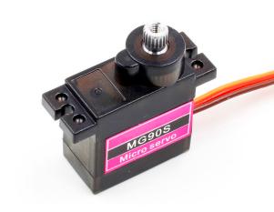
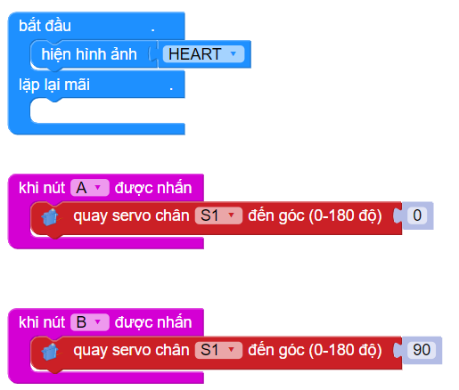

Đầu nâng Robot Rover
1. Giới thiệu
{kind=link}
Đầu nâng Robot Rover là thiết bị giúp Rover có thể nâng đồ vật lên xuống một cách đơn giản. Bạn có thể ứng dụng đầu nâng này vào các cuộc thi đấu Robocon để thực hiện những nhiệm vụ, thử thách tùy theo quy tắc của cuộc thi.
2. Link sản phẩm

3. Hướng dẫn lập trình
Để đầu nâng ForkLift có thể thực hiện được nhiệm vụ, chúng ta cần sử dụng động cơ servo MG90S, một động cơ cho lực kéo khỏe và độ bền cao..
Động cơ servo có thể thực hiện được lệnh xoay cánh tay động cơ đến vị trí được lập trình sẵn (từ 0 đến 180 độ) một cách tức thời hoặc theo một tốc độ cho trước.
{kind=link}
Chiều xoay của động cơ servo là hướng khi chúng ta quan sát trực diện với mặt trục xoay. Theo quy ước, chiều xoay từ phải sang trái tức ngược chiều kim đồng hồ của động cơ servo sẽ tính từ góc 0 độ đến 180 độ.
Servo MG90S có 3 dây tín hiệu như sau:
Dây nâu: cấp nguồn âm
Dây đỏ: Cấp nguồn dương (3.3-6 vôn DC)
Dây cam: dây tín hiệu điều khiển.
Giới thiệu khối lệnh:
Trong thư viện Rover, sử dụng khối lệnh sau để điều khiển servo của đầu nâng:
{kind=link}
Điều khiển động cơ servo 180 độ quay tới 1 góc nào đó từ 0-180.
Note
Trên Rover, có 2 cổng kết nối để điều khiển servo S1 và S2. Khi lập trình bạn cần chọn đúng cổng đã kết nối!
Viết chương trình điều khiển đầu nâng:
Yêu cầu: Lập trình robot khi ấn nút A sẽ nâng đầu nâng, ấn nút B thì sẽ hạ đầu nâng
Góc nâng lên sẽ là góc 0 độ
{kind=link}
Góc hạ xuống sẽ là góc 90 độ (có thể tùy chỉnh độ hạ thấp)
{kind=link}
Chương trình mẫu:
{kind=link}